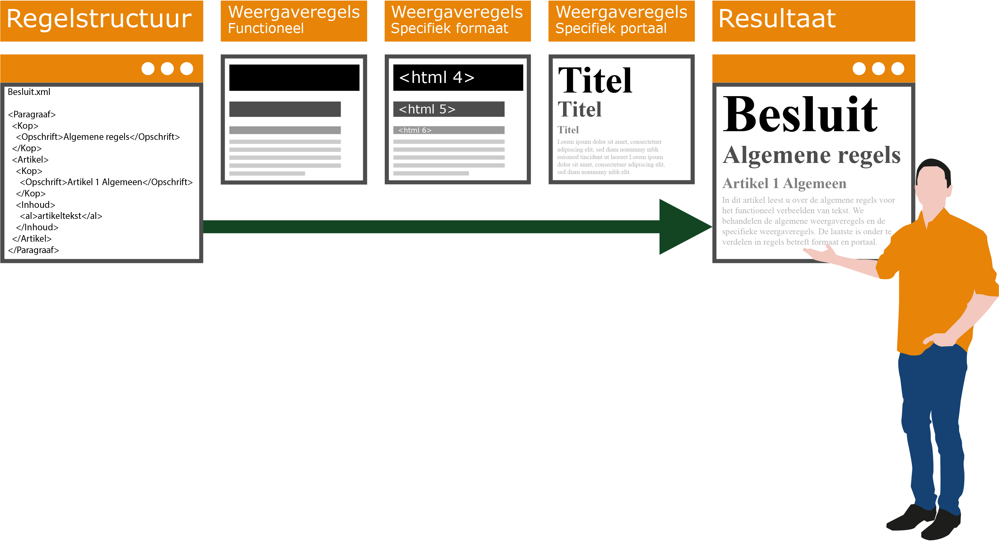
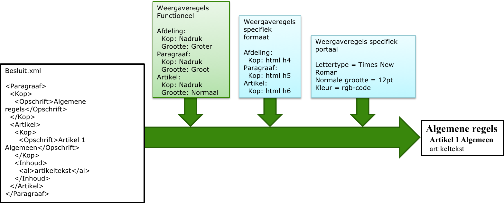

Tekstpresentatie
Voor de weergave van tekst en tekst-structuur wordt in STOP gebruik gemaakt van dezelfde principes die toegepast worden in digitale tekstverwerkers. Bij digitale tekstverwerking wordt de opmaak van een tekst en de tekst zelf van elkaar gescheiden. Door 'opmaakregels' toe te passen kan een tekst weergegeven worden in mensleesbare vorm. Dergelijke opmaakregels bevinden zich ‘onder water’ en worden niet getoond aan de gebruiker. Het effect van de opmaakregels, toegepast op de tekst, wordt aan de gebruiker getoond. Bij het opslaan van een tekst wordt wel de tekst, en toe te passen opmaak opgeslagen, maar niet de opmaakregels zelf. Zo wordt bijvoorbeeld vastgelegd dat het een koptekst betreft, maar niet dat de koptekst vetgedrukt met lettergrootte van 25 punten weergegeven moet worden. De precieze weergave kan daardoor variëren afhankelijk van het medium of formaat (bijv. HTML/PDF) waarin de tekst gepresenteerd wordt. Dezelfde tekst weergegeven op een mobiele telefoon moet er immers anders uitzien dan afgedrukt in de krant. STOP is ook volgens dit principe ontworpen, waarbij het vooral gaat om het vastleggen van de tekst zelf.
De eisen die gesteld worden aan de presentatie van besluiten die juridisch directe regels bevatten (zoals een verordening), zijn strikter dan voor besluiten die een vrijere opzet hebben (zoals visies). Daarom heeft STOP voor beide een ander model dat op hoofdlijnen gelijk is maar in details afwijkt.
Principe voor de functionele presentatie van teksten
Uitgangspunt voor de standaard zijn de functionele eisen die eenduidige weergave van deze informatie mogelijk maken. het komt erop neer dat STOP voorschrijft wát er moet worden weergegeven, maar niet hoe de opmaakstijl eruit ziet. De stijl waarin de tekst gepresenteerd wordt staat los van de inhoud van het besluit. Dat maakt het flexibel. Dat betekent dat dezelfde informatie op de eigen website weergegeven kan worden met een andere kleur of een ander lettertype.
De functionele weergaveregels moeten worden vertaald naar regels die voor het gebruikte medium bruikbaar zijn. Zo zal een vertaling naar html er anders uitzien dan een vertaling naar PDF.
Tot slot is er mogelijk nog een nadere specificatie naar de specifiek te gebruiken stijl zodat deze aansluit bij de "huisstijl" van het medium.
Principe van functioneel presenteren van tekst
Van de drie sets met regels in bovenstaande illustratie kan gesteld worden
De eerste set (Weergaveregels functioneel) is onderdeel van de standaard.
Voor toepassing van deze functionele weergaveregels uit de standaard zal de tweede set (Weergaveregels specifiek medium) nodig zijn waarin de functionele weergaveregels uit de standaard uitgewerkt worden voor specifieke formaten. Te denken valt aan weergave als html of pdf.
De derde set regels (Weergaveregels specifieke uitgave) zal onderdeel zijn van de specifieke uitgave zelf. Denk hierbij aan de css van een gemeentelijke site. Deze zal anders zijn dan de css binnen Overheid.nl.
De weergaveregels van de specifieke uitgaven op overheid.nl en officielebekendmakingen.nl zullen conform de standaardregels van de bekendmakingsbladen zijn, zowel voor op het web, als in PDF/A-formaat.
Het staat eenieder vrij om een eigen specifieke uitgave te maken en hierbij een volledig andere presentatie te maken. Een sprekend voorbeeld is de omgevingsvisie die ook in de communicatie met het grote publiek een belangrijke rol speelt. De mogelijkheid om functionele regels via verschillende media te publiceren biedt de bestuursorganen de flexibiliteit om het instrument zoveel mogelijk naar eigen inzicht vorm te geven.
Hiërarchie van tekstelementen
Alle tekstmodellen kennen globaal dezelfde benadering waar het gaat om het presenteren van tekst; dit is terug te vinden in het informatiemodel voor de tekstmodellen. Het STOP-tekstmodel benoemt tekstobjecten en beschrijft de structuur waarin die tekstobjecten toegepast kunnen worden. Het tekstmodel geldt voor alle officiële overheidspublicaties.
STOP onderscheidt voor inhoudelijke tekst twee soorten tekststructuren:
Artikelstructuur: de tekststructuur waarbij het lichaam van een (formele) regeling is opgebouwd uit één of meer artikelen;
Vrijetekststructuur: de tekststructuur die wordt gebruikt voor juridisch authentieke documenten waarvan het lichaam geen artikelen bevat, zoals visiedocumenten en projectbesluiten. Deze tekststructuur wordt ook toegepast in documentdelen buiten het lichaam van de regeling met een artikelstructuur, zoals het motiveringsdeel en bijlagen.
De tekststructuren van STOP kennen structuurelementen, elementen met inhoud, overkoepelende elementen en de inhoud zelf:
Structuurelementen: Dit zijn die elementen die de tekst structureren (maar geen inhoud bevatten), voorbeelden zijn Hoofdstuk, Paragraaf en Divisie.
Elementen met inhoud: Dit zijn elementen die (juridische) inhoud bevatten: voorbeelden zijn Artikel, Lid en Divisietekst.
Overkoepelende elementen: Een voorbeeld: het overkoepelend element van het Lichaam is Regeling. Ook alinea's kunnen binnen een overkoepelend element Groep worden geplaatst
De inhoud zelf: Voorbeelden van de inhoud zelf zijn Alinea, Tabel en Figuur.
In de navolgende tekst gebruiken we 'tekstelementen' als de term voor de vier elementen-soorten tezamen.
STOP biedt tekstmodellen met ruime mogelijkheden. Er is niet voor gekozen om per soort besluit of regeling een apart tekstmodel te maken, maar om per soort een breed model te hanteren. Voor concrete documenttypen wordt in een toepassingsprofiel aangegeven welke elementen en tekstconstructies van toepassing zijn. Bijvoorbeeld voor Omgevingswet wordt in toepassingsprofielen (TPOD) voor de omgevingsdocumenten beschreven hoe het STOP-tekstmodel in het specifieke omgevingsdocument moet worden toegepast en de volgorde van de tekstelementen is er in vastgelegd.
Voor de presentatie van tekst is deze hiërarchische tekststructuur van de tekstelementen van belang. Deze volgorde wordt uitgedrukt in relatieve groottes ten opzichte van het kleinste element en dient ook gehanteerd te worden bij de opmaak van tekst (korpsgrootte van het lettertype) die aan een raadpleger wordt getoond.
Veel tekstelementen kennen een kop (opschrift). De koppen van een tekstelement kunnen ook onderscheiden worden via opmaak zodat het voor de lezer duidelijk is dat het om een kop gaat.
Het principe van presenteren van tekst op basis van de hiërarchische tekststructuur van de tekstelementen is generiek; er is echter voor de weergave een onderscheid tussen teksten met regels (met een artikelstructuur) en vrije teksten (met een vrijetekststructuur).
Tekstpresentatie voor teksten met een artikelstructuur
Bij teksten met regels is de artikelsgewijze opbouw kenmerkend. De artikelstructuur bestaat uit tekstelementen. Deze tekstelementen zijn ontleend aan de Aanwijzing voor de regelgeving (aanwijzingen 3.54, 3.56, 3.57, 3.58, 3.59) met enige nadere specificaties en toevoegingen. Deze tekstelementen kunnen worden gebruikt voor de structurering van het lichaam van de tekst. Voorbeelden zijn Hoofdstuk, Titel, Afdeling, Paragraaf, Subparagraaf, Subsubparagraaf, Artikel en Lid. Voor de presentatie van besluiten met een artikelstructuur is de tekststructuur van de tekstelementen van belang.
De toepassingsprofielen van de verschillende omgevingsdocumenten leggen de volgorde van de tekstelementen vast. Deze volgorde wordt uitgedrukt in relatieve groottes ten opzichte van het kleinste element en dient ook gehanteerd te worden bij de opmaak van tekst (lettergrootte van het lettertype) die aan een raadpleger wordt getoond. De functionele presentatieregel is dat de presentatie van een afdelingkop groter is dan de presentatie van een paragraafkop, die weer groter is dan de artikelkop, zie onderstaande figuur.
Principe van functionele tekstpresentatie van tekst met een artikelstructuur
Veel tekstelementen kennen een kop. Een kop is opgebouwd uit de elementen Label, Nummer en Opschrift. Bij teksten met een artikelstructuur worden de kop-onderdelen gescheiden door spaties in de volgorde label, nummer, opschrift getoond. De kop bevat eventueel ook een subtitel.
Tekstpresentatie voor teksten met een vrijetekststructuur
De vrijetekststructuur is een tekststructuur die wordt gebruikt voor teksten die geen artikelen bevatten. Bij de vrijetekststructuur zijn vormvereisten tot een minimum beperkt, zodat bestuursorganen flexibel zijn om het instrument zoveel mogelijk naar eigen inzicht vorm te geven.
De Vrijetekststructuur wordt op twee verschillende manieren toegepast:
Voor vrijeteksten in het lichaam voor juridisch authentieke documenten waarvan het lichaam geen artikelen bevat, zoals visiedocumenten en projectbesluiten.
Deze tekststructuur wordt ook toegepast in documentdelen buiten het lichaam, zoals de motivering van het besluit, bijlagen en eventueel een toelichting.
Kennisgevingen en andere aankondigingen maken ook gebruik van een (eenvoudige) vrijetekststructuur.
Voor vrijetekstmodellen zijn drie tekstelementen beschikbaar: Divisie, InleidendeTekst, Divisietekst. Divisie is het structuurelement dat gebruikt wordt voor de indeling van de tekst in bijvoorbeeld hoofdstukken en secties. De opsteller kan de tekst naar eigen inzicht hiërarchisch indelen. Het element met juridische inhoud is de divisietekst. Voorbeelden van de inhoud zelf zijn teksten, tabellen en figuren. De InleidendeTekst is bedoeld voor specifieke toepassingen en wordt alleen gebruikt als dat in het toepassingsprofiel wordt voorgeschreven.
Iedere Divisie moet worden voorzien van een kop, die net als bij de artikelstructuur is opgebouwd uit de elementen Label, Nummer en Opschrift. De opsteller is vrij in de keuze van de kop-elementen, zolang er maar een Kop is. Een divisietekst mag een kop hebben maar dat hoeft niet. Als er binnen de tekst van een divisie een nadere onderverdeling nodig is via tussenkoppen, dan staat de tekst volgend op de tussenkop binnen één divisietekst en is de tussenkop de kop van de divisietekst. Maar het is ook mogelijk om de tekst van een divisie in meerdere divisieteksten op te delen zonder gebruik van tussenkoppen. Dit kan nodig zijn om de opeenvolgende tekstdelen apart te annoteren of muteren.
Bij de presentatie van teksten met een vrijetekststructuur wordt voor de opmaak van tekst (lettergrootte van het lettertype) hetzelfde principe gehanteerd als bij de teksten met een artikelstructuur: de hiërarchische indeling op basis van divisies wordt uitgedrukt in relatieve groottes van de koppen ten opzichte van het meest omvattende element en dient ook gehanteerd te worden bij de opmaak die aan een raadpleger wordt getoond. Voor de eventuele kop van een divisietekst wordt hetzelfde uitgangspunt gehanteerd als voor de Kop van een Artikel: hier schrijft STOP voor dat deze een vaste (absolute) opmaak heeft, ongeacht de plaats in de hiërarchie.
Tekstelementen die inhoud bevatten
Het STOP-tekstmodel kent elementen die inhoud bevatten. Inhoud bestaat uit onder andere Alinea, Figuur, Lijst en Tabel. Een compleet overzicht van alle inhoud-elementen is te vinden in het met de bijbehorende documentatie.
In de standaard is niets geregeld over de weergave van deze elementen. De eis die de standaard aan deze objecten stelt is dat als ze aanwezig zijn, ze ook op een logische en gebruikersvriendelijke getoond dienen te worden, in lijn met de richtlijnen die gelden voor het medium of platform.
Dit zijn elementen die voor kunnen komen in STOP teksten:
Wiskundige formules (ze worden opgenomen als (inline) afbeeldingen))
Reserveringen Gereserveerd. Deze worden gebruikt om aan te geven dat een onderdeel van een bekendmaking later middels een nieuwe publicatie verder invulling krijgt.
Referenties (interne en externe referenties.
Opmaak van de tekst
De standaard kent een beperkt aantal elementen die de opmaak of weergave van de tekst beïnvloeden:
Weergave van tekstfragmenten: vet, cursief, onderstreept, strong.
Weergave van zinnen: Alinea als paragraaf, br voor het afbreken van zinnen.
Relatieve afmetingen van tabelcellen: tgroup.
Relatieve afmetingen van illustraties: zie agInlineTekstAfbeelding.
Alinea's, lijsten, afbeeldingen en tabellen zijn zo gemodelleerd dat ze op een pagina of beeldscherm onder elkaar geplaatst worden, met enige (verticale) witruimte daartussen, als deze elementen geplaatst worden binnen het element Inhoud. Wanneer de tekst wordt geplaatst binnen een element Groep, zal tussen de elementen geen extra wit worden gegeven en kan de tekst aaneengesloten worden getoond. Wanneer binnen een alinea een tekst op een nieuwe regel moet beginnen kan een element br worden gebruikt om een deel van de tekst op een nieuwe regel te beginnen.
Andere aspecten worden niet ondersteund, zoals marges rond de tekst of extra witruimte. Dit is een bewuste keuze: het heeft geen functie in het begrijpen van de inhoud van de tekst. Het wordt overgelaten aan de STOP-gebruikende applicaties om daar goede keuzes in te maken. Bij andere tekstformaten is het mogelijk om bijvoorbeeld extra witruimte te forceren door het toevoegen van lege paragrafen of extra afbreektekens op te nemen. Dat werkt in STOP niet: applicaties mogen lege paragrafen en regels negeren bij het weergeven, omdat ze geen inhoud bevatten en dus niet functioneel zijn. Het kan zijn dat een specifieke applicatie in zo'n geval wel extra witruimte laat zien, maar er is geen enkele garantie dat andere applicaties (zoals bijvoorbeeld LVBB of DSO-LV) dat honoreren. Waar mogelijk zijn in het implementatiemodel (IMOP) validaties opgenomen om dit incorrecte gebruik van elementen te voorkomen.